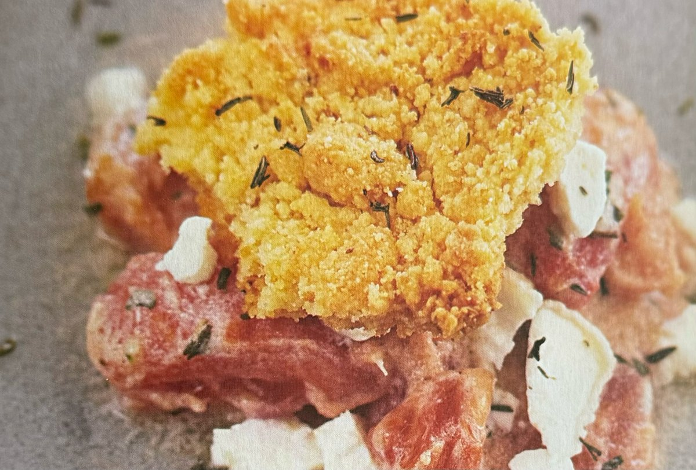

Crumble tomates chèvre
Ingrédients
4×
- 2 échalotes
- 9 tomates moyennes
- 2 c. à s. d'huile d'olive
- 3 c. à s. d'ail haché
- 75 g de chèvre frais
- 3 c. à s. de basilic
- 2 pincées de sucre
- 1 noisette de beurre
- 2 crottins de chèvre
- 75 g de beurre
- 75 g de farine
- 3 c. à s. de chapelure
- 75 g de parmesan râpé
- 1 c. à s. de thym

Préparation
Étape 1
Émincer 2 échalotes. Monder 9 tomates moyennes (30 sec dans l’eau bouillante), les peler et les couper en morceaux.
Étape 2
Chauffer 2 c. à s. d'huile d'olive dans une grande poêle. Ajouter 3 c. à s. d'ail haché, les échalotes, les tomates, 75 g de chèvre frais, 3 c. à s. de basilic et 2 pincées de sucre. Saler, poivrer et cuire 8min en remuant.
Étape 3
Beurrer un plat avec 1 noisette de beurre et y répartir la préparation. Ajouter 2 crottins de chèvre sans croûte, coupés en morceaux.
Étape 4
Ramollir 75 g de beurre au micro-ondes. Sabler du bout des doigts avec 75 g de farine, 3 c. à s. de chapelure, 75 g de parmesan râpé et 1 c. à s. de thym. Répartir sur les tomates.
Étape 5
Cuire 25min à 210ºC.
Résumé
2 échalotes
9 tomates moyennes
Émincer Monder
2 c. à s. d'huile d'olive
3 c. à s. d'ail haché
75 g de chèvre frais
3 c. à s. de basilic
2 pincées de sucre
cuire
1 noisette de beurre
2 crottins de chèvre
75 g de beurre
75 g de farine
3 c. à s. de chapelure
75 g de parmesan râpé
1 c. à s. de thym
Sabler Répartir
Cuire 210ºC